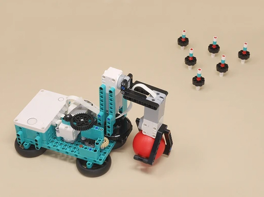

|

|
This bowling robot grabs and throws the red ball sort of like a human, with its claw and arm motors. A third motor on the baseplate rotates the arm very slowly left and right on a geared turntable so you can adjust your aim. Use the left and right arrow buttons on the hub to aim, then press both buttons at the same time to throw the ball.
Use the triangular template the mark the positions of the 6 pins as you lay them out on the floor, then remove the template and go bowling! Like a real bowler, the ball releases a little differently depending on how carefully you load the ball, and sometimes with some spin!
|